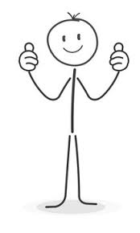

My College Experience
Go back
I started as a Running Start Student, who wanted to go into Computer Science.
I took a java course at my community college,
and then random other courses to finish my Associate degree in Science.
I transferred to Western for the Fall of 2020, the first full year of COVID school.
My experience taking 3 other CS classes online was extremely unpleasant for me.
Fall 2021 was a hybrid learning environment.
I decided to live in the dorms as my first true college experience.
Which was a difficult change in my life. I also switch majors to Applied Mathematics.
I continued through Fall of 2022 and ran into Brian Hutchinson at Data and Donuts,
an event for showing of Western's new program, Data Science.
Considering my classes for my CS minor and my math degree,
I only needed 8 classes for a second degree in Data Science.
I was skeptical from my time in CS, but I gave it a go starting DATA 311 that winter.
I loved it so I confirmed with the Data Science advisor and applied to the degree.
I was accepted! I set out my course schedule to graduate with both degrees in the Spring of 2024!
After finding my schedule I realized I had space to add extra classes.
I realized that I did not know how to make a website or build a program,
so I decided to take CS 102, 202, and 348 to learn about building websites.
Now, you are to the present, I am taking CS 202 and 348 right now.
If everything goes to plan I will graduate Spring of 2024!
